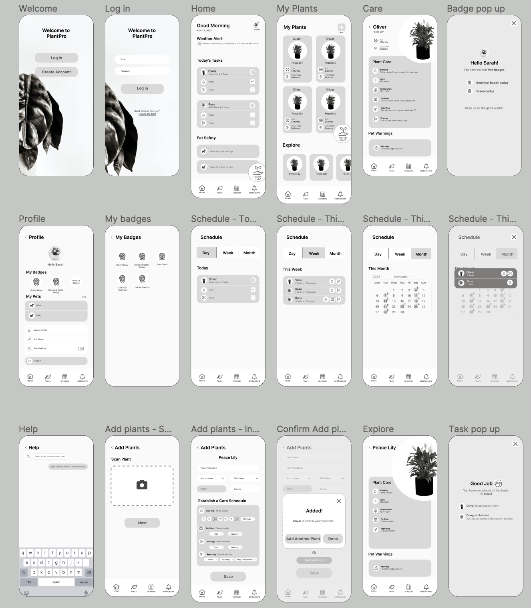
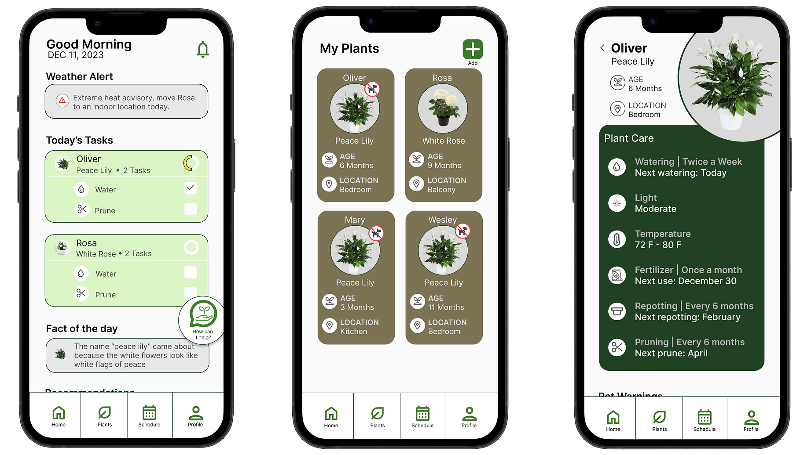
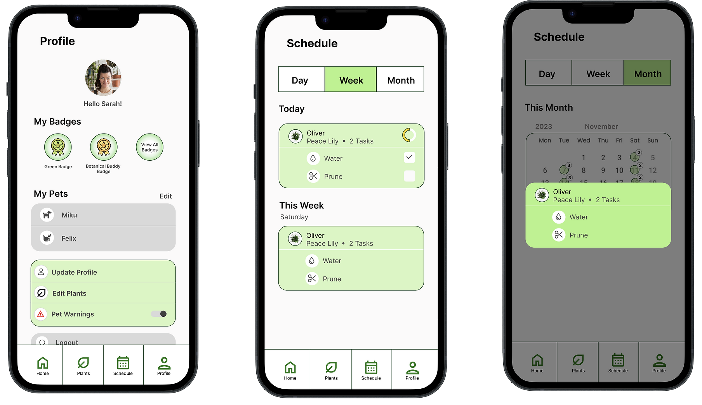

PlantPro
Project Context
-
Background
Owning a plant is not only a financial investment, but an emotional investment as well. People get very attached to their plants which can lead to a traumatic experience when they die. Many individuals express interest in owning houseplants, but they lack the knowledge, guidance, or structure required to ensure proper care of the plants. In addition, worries of plants that are toxic to pets discourages inexperienced plant owners from having both plants and pets.
-
How can we encourage the purchasing of houseplants while ensuring current and prospective plant owners know how to take proper care of their plants by applying appropriate instructions to allow their plants to thrive?
-
Goal
The goal of this project is to make an plant care app that encourage people to own houseplants, and also identify the barrier of purchasing plants and finding solutions to overcome it.
- See Prototype
Role
It was a team of two and both of us were heavily involved in the end-to-end design process which included user research, conducting interviews, synthesis, paper and digital wireframing, usability studies, and low and high-fidelity prototyping.
Time
September 2023 -December 2023
Tool
- Figma
- Adobe Photoshop
- Adobe Illustrator
Research
-
The first step in the project was to learn more about existing plant owners and potential plant buyers. We are also trying to find the answers for following research questions.
-
Research Questions
- What are the challenges the users are facing in plant care.
- How does the preference for specific types of house plants vary across different age groups.
- How can people have plants without conflicting with their pet’s safety.
- How do certain lifestyles (traveling a lot, busy schedule) act as a barrier to owning and taking care of plants.
- How do misconceptions about plant care affect plant ownership?
-
Interviews and Surveys
Our research was collected through a series of 1:1 interviews of 11 participants who are existing plant owners and potential plant buyers . In addition, the participants were sent a brief survey that they completed before their interview. The survey provided basic demographic information, and helped shape the direction of the interview. The interviews were conducted over Zoom to utilize the automatic transcription feature. A total of 11 participants interviews were conducted. Each interview lasted between 20-40 minutes. At the time of the interviews, ten participants lived in South Florida and one participant lived in Minnesota. The participants ranged from 24 to 67 years of age.
It's just hard to find information, and whatever product I do get does have to be pet friendly.
And definitely I passed so many difficulties. I remember I buy bad soil, and my plants almost die.
Google was just extremely confusing, and for each plant they had a lot of different information.
Voices from User Interviews
Building Empathy
We established three persona profiles using the quantitative and qualitative information from the survey and interview responses.
-
 Brittany is a working adult who lives with two dogs. She is a animal lovers and
currently a owner
of 10 indoor and outdoor plants. She has a plan to expand her plant collection, but
the
biggest
challenge she faces is knowing the information about which plants are safe for her
pets.
She
feels Google searches and doing research about pet issues, also including finding
the
plant care
guidelines for specific plants, are very confusing and exhausting. For any plant
care
issues she
just call her grandma for help, since she trusts her grandma more than information
on
Google.
Goals:
Brittany is a working adult who lives with two dogs. She is a animal lovers and
currently a owner
of 10 indoor and outdoor plants. She has a plan to expand her plant collection, but
the
biggest
challenge she faces is knowing the information about which plants are safe for her
pets.
She
feels Google searches and doing research about pet issues, also including finding
the
plant care
guidelines for specific plants, are very confusing and exhausting. For any plant
care
issues she
just call her grandma for help, since she trusts her grandma more than information
on
Google.
Goals:- An easy way to find out information about the toxic plants based on her dog breed
- Get organized plant care guidelines for any particular plant
- Expand her plant collection without stressing out about her pet’s safety
-
 Lee is an undergrad student and very passionate about his indoor plant collection.
Most of the
plants he got as gifts from his friends and family. His plant collection journey
started
from
taking care of the plants he received as gifts. Later, he got more enthusiastic
about
plants,
and bought more indoor plants which are easy to take care of. He gets frustrated
when he
forgets
to track the plant watering schedule, as well as gets confused about what kind of
supplies he
needs to buy for his existing plants as well as his new plants.
Goals:
Lee is an undergrad student and very passionate about his indoor plant collection.
Most of the
plants he got as gifts from his friends and family. His plant collection journey
started
from
taking care of the plants he received as gifts. Later, he got more enthusiastic
about
plants,
and bought more indoor plants which are easy to take care of. He gets frustrated
when he
forgets
to track the plant watering schedule, as well as gets confused about what kind of
supplies he
needs to buy for his existing plants as well as his new plants.
Goals:- Find a solution for tracking the plant care routine
- Get a list of supply recommendation based on his plant type
After researching the user empathy maps we came up with the three key insights
Ideation
-
Brainstorming
In the ideation process we were developing, and refining ideas to address the user's needs and create an effective and delightful user experience that solves our users problem more effectively. Designing a new and innovative solution required us to brainstorm not only the design but how we would introduce this new flow to users. We explored different solutions and sketched out the user flows. Then we discussed and decided the most feasible solution for our users.
-
Design Solutions
1
Based on the type of plant and geographical location, we will suggest a plant care schedule. Users will receive a message when it is time to buy pest control, fertilizer, or a bigger pot.
2
The user will receive notifications when it is time to care for their plants, and they have to check off that they completed the task.
3
For existing plant and pet owners, they can input the pets and plants they have. If there are any conflicts, they will receive a pet warning which plants are dangerous.
Digital Wireframes
-
As the initial design phase continued, we made sure to base screen designs on feedback and findings from the user research. Using the completed set of digital wireframes, then we created a low-fidelity prototype, so the prototype could be used in a usability study.
- 
We conducted rounds of usability studies. Findings from the prototype testing helped us to guide the designs from wireframes to mockups. The testing study revealed what aspects of the mockups needed refining. Here are all the findings we got from usability studies:
1
Make the Font Size BiggerBased on the type of plant and geographical location, we will suggest a plant care schedule. Users will receive a message when it is time to buy pest control, fertilizer, or a bigger pot.
2
Revamp Pet WarningsUsers felt the meaning of the pet warning icon wasn’t clear and was hard to understand. The warning icons have been updated to better convey their meaning.
3
Change taskbar flowUsers Before the hierarchy for subtasks was missing in daily task bar and users are having difficulty to understand the subtasks. The indent on the tasks should make it more clear that certain tasks belong to a specific plant.
4
Revamp Adding a Plant PhotoUsers wanted more options for adding a picture of their plant. Some users wanted to add their plant without uploading the plant picture. The updated add plant page gives users options to scan plant with AI, take picture with their phone, or upload picture from their phone
5
Add Today’s Tasks to Weekly ViewUsers wanted to see task details in the weekly view. Before it was only number of tasks in week view. Now we added today’s task and upcoming week task details in the week view.
6
Make Chatbot More ClearUsers were confused by the chatbot button; they didn’t realize that it would lead them to an AI chat.
Final Design
-
Our final design encompassed three main opportunity areas – plant care tracking, pet safety and structured plant care schedule-for our users. We updated our schedule task bar with more detail information, make the font size bigger, change the pet warning icons and add more effective plant care details.
- 
- 